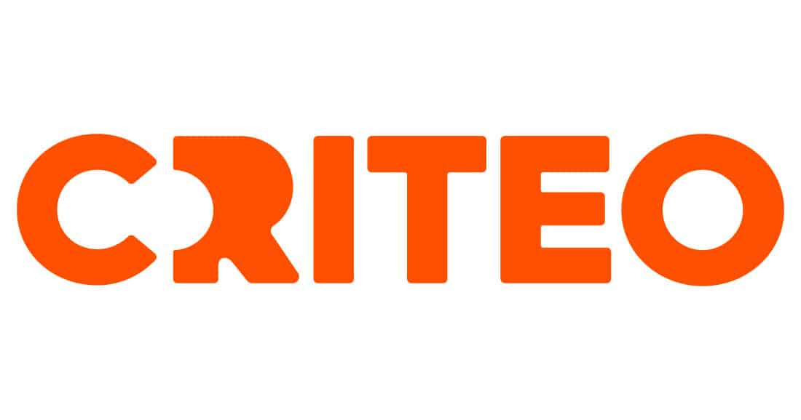

Origins
I was born in Williamsburg Virginia, the place I was named after. After I turned two years old I moved to New York and have lived here ever since. After graduating from Patchogue-Medford High school I began my undergraduate studies at Stony Brook University.
Work Experience
I've worked in many fields but the consistent theme is leveraging data and technology to solve problems.

Criteo
Data Scientist
May 2021 - Present
tools: Python, SQL, Dataflow, Cron, Spark, Bash, JavaScript, Gerrit, Google Cloud Platform, Amazon Web Services
Day-to-day
- Build self-service reporting and performance insights into online video advertising campaigns (OVL and OTT) in order to help grow client spend ~300% year over year on upper funnel and full funnel tactics
- Support backend data pipelines and data migration, with dataflow job, and warehouse management for tasks such as audience targeting, complex custom reporting, and supply data to other teams for their analytics
- Review code submissions on various database or automated tooling alterations
Projects
- Building A/B testing infrastructure, joining internal processes with a newly acquired platform (IponWeb) to allow internal teams to conduct A/B tests
- Use Natural Language Processing to classify app inventory type and allow for better reporting and training data for bidding engine
Fordham University
Graduate Research Assistant (Machine Learning)
September 2019 - May 2021
tools: Microsoft Suite, Python, Spark, Bash, Java, JavaScript, Android, SQL, Google Cloud Platform
- Main Project - Using passive biometrics to continuously certify a user with multiple devices (Implicit continuous biometric authentication model using IoT wearables) Initially testing with classical models (RF, KNN, SVM, NB) to artificial neural networks (CNN,RNN,CRNN) we’ve made a user authentication modeled for internet connected devices taking into account Heart Rate, Gait, and Breathing with accuracy of 97%. For implementation I’ve built a full-stack system incorporating a custom Fitbit application front end to a computational back-end android app with server interaction [JavaScript: Fitbit and server, java: android app, python: feature computation and model decision generation] of the authentication model
- Secondary Project - User Location Prediction in Absence of GPS (Point of Interest identification) study using machine learning with 95% accuracy.
National Grid
Financial Analyst
June 2016 - September 2019
tools: Microsoft Suite, VBA, SAP, Business Intelligence, Oracle
- Automate system batch entries using VBA and SAP to reduce manual entries by 15% and speed up the monthly accounting process by an additional workday.
- Analyze financial information during month-end close for the National Grid subsidiary, Narragansett Electric Company, and work with business partners to accurately establish cost capture methods for recovery of over $10 billion.
- Close 8 audits with outside auditors (PWC/Deloitte) and energy regulators (State and Federal) to submit official financials.
- Work with technical accounting teams to draft accounting policy and memos on existing accounting mechanisms to provide a framework of knowledge transfer.
Mercer
Employee Health and Benefits Regional Team Intern
June 2015 - August 2015
tools: Microsoft Suite, VBA
- Updated pricing tool with a GUI to make it user friendly while preventing tampering of the source code using VBA.
- Assist in industry employee benefits bench-marking: based on industry data and company culture rate and alter client company's benefit plans.
- Medical deep dive analysis: analysis of medical data to optimize employee incentive programs.
Education
The academic journey started at Stony Brook University then after working for three years I've returned to graduate school at Fordham University.
Fordham University Univerity
M.S. Data Science
GPA: 3.98
Was awarded a GSAS Centennial Scholarship and a staff position in the department of computer science as a Graduate Research Assistant
Copy of my Thesis: "Multi-modal User Authentication Using Biometrics"
Stony Brook University
B.Sc. Applied Mathematics and Economics
Minor: Accounting
GPA: 3.58
Was awarded a Presidential Scholarship and accepted to the University Scholars program